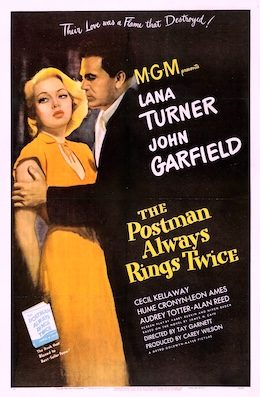

The Postman Always Rings Twice

Starring: Lana Turner, John Garfield, Cecil Kellaway
Director: Tay Garnett
Writer: Niven Busch, James M. Cain
Producer: Carey Wilson
The Postman Always Rings Twice is a 1946 American film noir directed by Tay Garnett and starring Lana Turner, John Garfield, and Cecil Kellaway. It is based on the 1934 novel of the same name by James M. Cain. This adaptation of the novel also features Hume Cronyn, Leon Ames and Audrey Totter. The musical score was written by George Bassman and Erich Zeisl (the latter uncredited).
Trivia
- Based on The Postman Always Rings Twice (novel by James M. Cain).
- In early February 1934, before Cain's novel was published, RKO executive Merian C. Cooper submitted a synopsis of his story to the Production Code Administration (PCA), which reviewed movie scripts using the Motion Picture Production Code (commonly known as the Hays Code).
- Metro-Goldwyn-Mayer purchased the rights to make a movie adaptation a full twelve years prior to the film's release.
- Cain received half that amount, and it is the only money he ever received from the movie and its successful remake.
Previous Showings
6 Runs • 2 Festivals
Original Billings: 1 run (August 18, 1946)
Original Run: August 18, 1946 (Sunday - Tuesday)
All runs on record (6):
- August 18, 1946 (Sunday - Tuesday)Lana Turner, John Garfield
- September 7 - 10, 1991w/ Laura
- August 4, 1994w/ The Bad and the Beautiful
- February 27 - March 2, 1997w/ Murder, My Sweet, Three Little Girls in Blue
- April 11 - 13, 2003Film Noir and Pre-Codew/ Force of Evil
- November 9 - 10, 2024Film Noir plus Val Lewtonw/ Criss Cross